Places To Visit
★
2019 Winning place to visit in Ethiopia
AXUM
Aksum, Ethiopia
Situated in the highlands of northern Ethiopia, Aksum symbolizes the wealth and importance of the
civilization of the ancient Aksumite kingdom, which lasted from the 1st to the 8th centuries AD. The kingdom
was at the crossroads of the three continents: Africa, Arabia and the Greco-Roman World, and was the most
powerful state between the Eastern Roman Empire and Persia. In command of the ivory trade with Sudan, its
fleets controlled the Red Sea trade through the port of Adulis and the inland routes of north eastern
Africa.
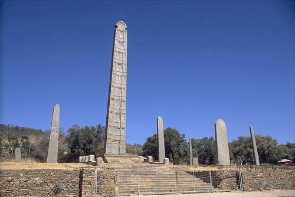
Discover More about AXUM
AXUM
The largest standing obelisk rises to a height of over 23 meters and is exquisitely carved to
represent a nine-storey building of the Aksumites. It stands at the entrance of the main stelae
area. The largest obelisk of some 33 meters long lies where it fell, perhaps during the process of
erection. It is possibly the largest monolithic stele that ancient human beings ever attempted to
erect. A series of inscription on stone tablets have proved to be of immense importance to
historians of the ancient world.
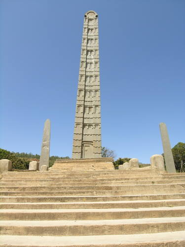
Some of them include trilingual text in Greek, Sabaean and Ge'ez (Classical Ethiopian), inscribed by
King Ezana in the 4th century AD. The introduction of Christianity in the 4th century AD resulted in
the building of churches, such as Saint Mary of Zion, rebuilt in the Gondarian period, in the 17th
century AD, which is believed to hold the Ark of the Covenant. Aksum is a city in northern Ethiopia.
It's known for its tall, carved obelisks, relics of the ancient Kingdom of Aksum. Most are in the
northern Stelae Park, including a huge fallen pillar, now in pieces. Centuries-old St. Mary of Zion
is a Christian church and pilgrimage site believed to have housed the biblical Ark of the Covenant.
The neighboring Chapel of the Tablet is said to contain the Ark today.
LALIBELA CHURCH
Church of Saint George, Lalibela
Lalibela is a town in Amhara Region, northern Ethiopia famous for monolithic rock-cut churches. The whole of
Lalibela offers an exceptional testimony to the medieval and post-medieval civilization of Ethiopia.Lalibela
is one of Ethiopia's holiest cities, second only to Aksum, and a center of pilgrimage.The population of
Lalibela is almost completely Ethiopian Orthodox Christian. Ethiopia is one of the earliest nations to adopt
Christianity in the first half of the fourth century, and its historical roots date to the time of the
Apostles.
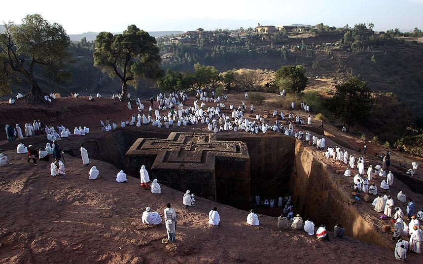
Discover More about Lalibela
Lalibela
The churches themselves date from the seventh to thirteenth centuries, and are traditionally dated to
the reign of the Zagwe dynasty king Gebre Mesqel Lalibela (1181–1221 AD). The layout and names of
the major buildings in Lalibela are widely accepted, especially by local clergy, to be a symbolic
representation of Jerusalem. This has led some experts to date the current church forms to the years
following the capture of Jerusalem in 1187 by Muslim leader, Saladin. Lalibela is located in the
Semien Wollo Zone of the Amhara Region, at roughly 2,500 meters above sea level. It is the main town
in Lasta woreda, which was formerly part of Bugna woreda. The Rock-Hewn Churches were declared a
UNESCO World Heritage Site in 1978.
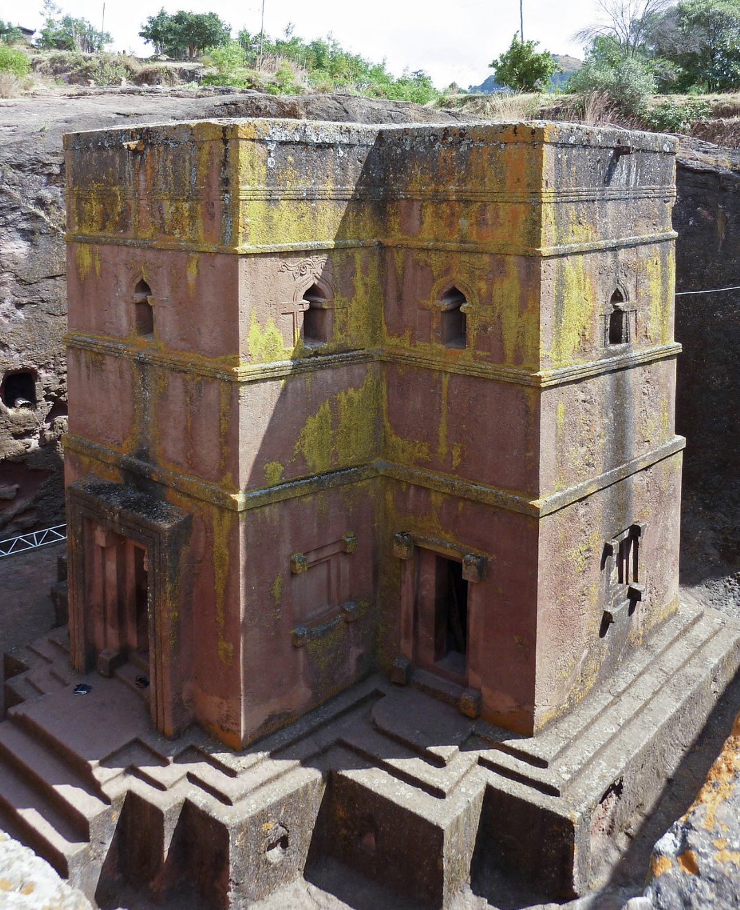
Ethiopia enjoys a mild climate, with average temperatures below 20°C in the highlands. This number
can rise past 30°C on the lowland fringes of eastern, southern and western Ethiopia. Generally the
best time to visit is between October and June, when it is the dry season. Rains tend to stop in
early October, meaning afterwards the highlands are lush and green – perfect for trekking amongst
pretty wildflowers that have sprung up. Be sure to bring a sweater all year round due to Ethiopia’s
elevation. If you’d like to visit during a festival, Ethiopia hosts some jubilant celebrations
from the Timkat festival in January, celebrated by orthodox Christians to the Hidar Tsion; a
pilgrimage to Axum by Ethiopians from all over the country.
FASILIDES CASTLE
Fasil Ghebbi, Ethiopia
Fasilides Castle is a stunning tourist destination in Ethiopia. It is an old castle built in 17th century for
the Ethiopian emperor Fasilides Alam Sagad. The castle can be found in Gondar, Amhara Region. The castle’s
structure is purely made of stone. Definitely, Fasilides Castle is a representation of Ethiopia’s great
history.
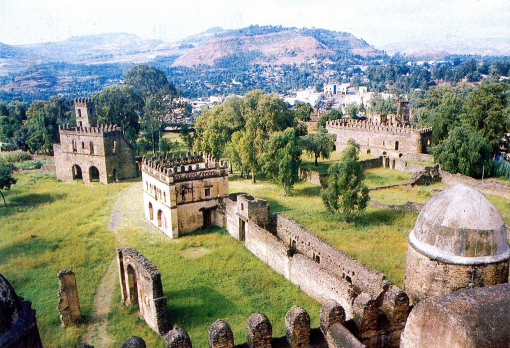
Discover More About Fasilides
FASILIDES CASTLE
Gondar Ethiopia, Recognised as a UNESCO World Heritage site in 1979, the palace, surrounded by an
impressive 900-m (2,953-ft) wall, stands in a compound filled with juniper and wild olive trees,
amid Enqulal Gemb, or Egg Castle, named after its domed roof, the royal archive, many impressive
churches and monastaries and a stable.
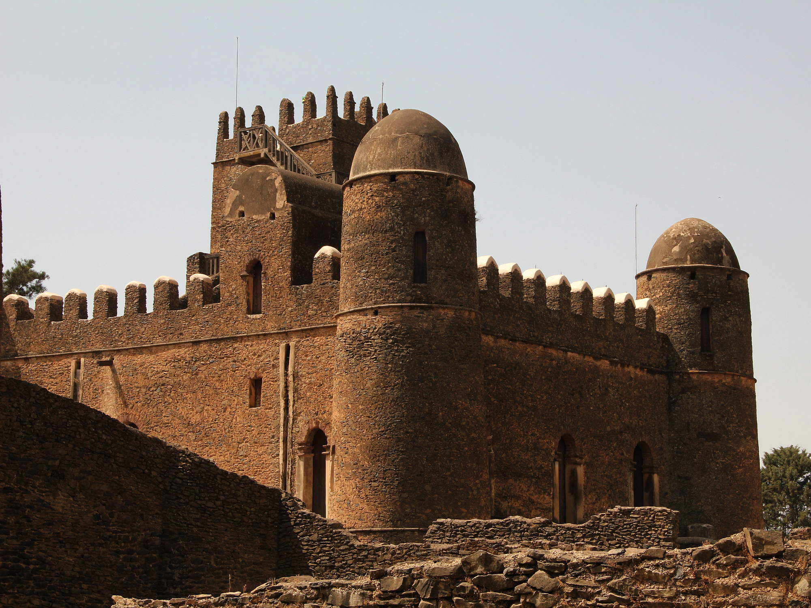
These exemplify architecture that is marked by both Hindu and Arab influences, subsequently
transformed by the Baroque style that the Jesuit missionaries brought to Gondar Ethiopia, and have
earned The city is nicknamed “The Camelot of Africa” due to the presence of a group of royal
castles.
EMPEROR JOHANNES CASTLE
yohannes, Ethiopia
The castle of Emperor Johannes IV is the main attraction of the city of Makale, located in the north of
Ethiopia. The well-preserved royal palace with high battlements is now a historical museum, where the
imperial attributes of the XIX century are kept.The castle was built by Emperor Johannes IV in the 1870s
as the official royal residence .

Discover More About Johannes
Johannes
riginally he lived in Debre Favor where one can still see the ruins of the early imperial palace.
Subsequently, Johannes returned to his native region and moved the capital to Makel, where he lived
until his death in 1889 at the Battle of Metema.Besides the fact that Johannes is known as a great
general, he was also a convinced Christian. Therefore, the emperor built his palace surrounded by
many temples to show his commitment to Christianity.
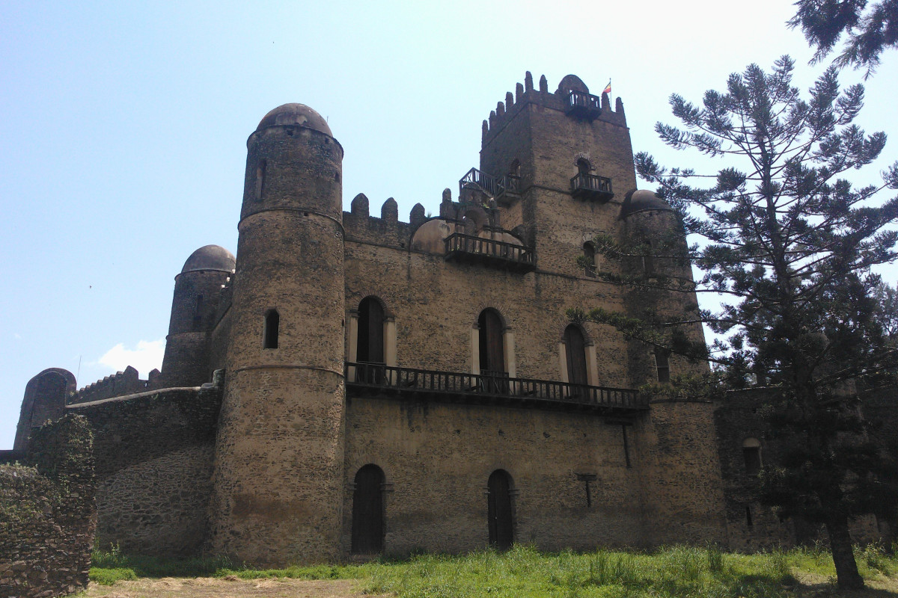
The architecture of the imperial palace was designed under the strong influence of the Gondar castles
, which served as a home to the emperors of Ethiopia in the 17th-18th centuries.
Blue Nile Falls
Blue Nile Falls, Ethiopia
The Blue Nile Falls is a waterfall on the Blue Nile river in Ethiopia. It is known as Tis Abay in
Amharic, meaning "great smoke". It is situated on the upper course of the river, about 30 km downstream
from the town of Bahir Dar and Lake Tana. The falls are one of Ethiopia's best known tourist
attractions.
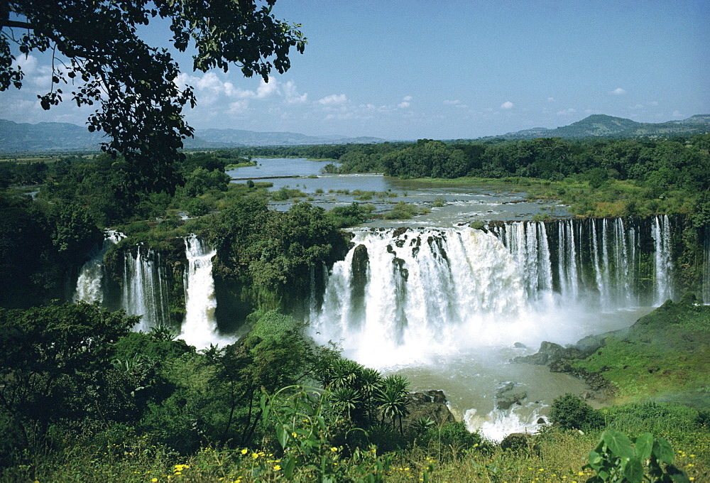
Discover More About Blue Nile
Blue Nile, Ethiopia:
The falls are estimated to be between 37 and 45 meters high, consisting of four streams that
originally varied from a trickle in the dry season to over 400 meters wide in the rainy season.
Regulation of Lake Tana now reduces the variation somewhat, and since 2003 a hydro-electric
station has taken much of the flow out of the falls except during the rainy season. The Blue
Nile Falls isolate the ecology of Lake Tana from the ecology of the rest of the Nile, and this
isolation has played a role in the evolution of the endemic fauna of the lake.
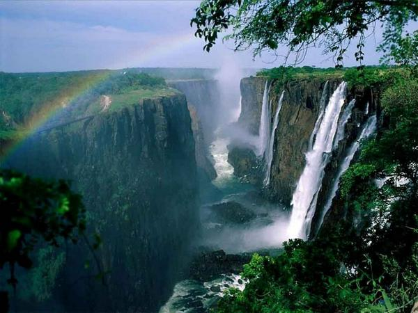
LA short distance downstream from the falls sits the first stone bridge constructed in Ethiopia,
built at the command of Emperor Susenyos in 1626. According to Manuel de Almeida, stone for
making lime had been found nearby along the tributary Alata, and a craftsman who had come from
India with Afonso Mendes, the Orthodox Patriarch of Ethiopia, supervised the
construction.
Erta Ale
Erta Ale, Ethiopia
Erta Ale is 613 metres (2,011 ft) high, with one or sometimes two active lava lakes at the summit which
occasionally overflow on the south side of the volcano. It is notable for holding the
longest-existing lava lake, present since the early years of the twentieth century (1906). Volcanoes
with lava lakes are very rare: there are only six in the world.
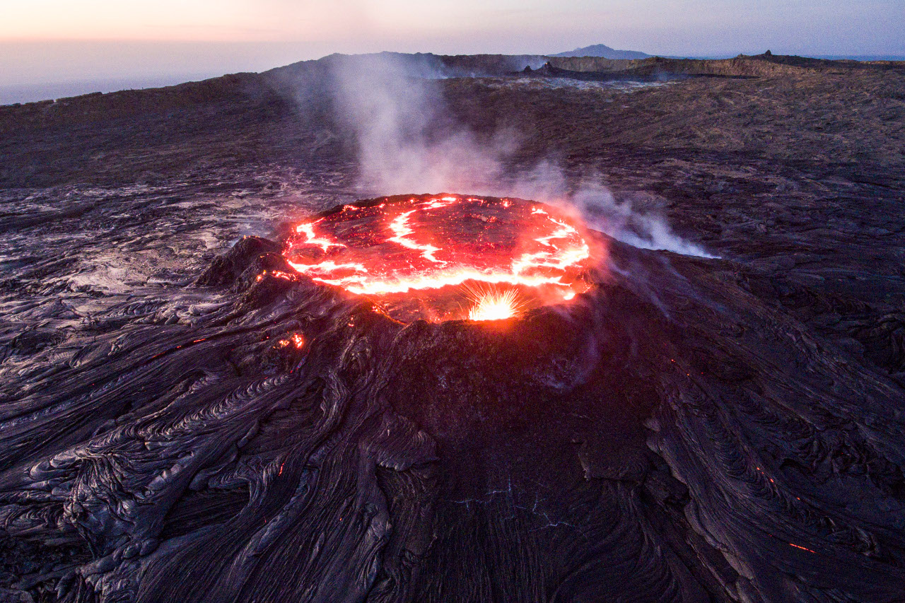
Discover More Name 1
Name 4:
Erta Ale means "smoking mountain" in the local Afar language and its southernmost pit is known
locally as "the gateway to Hell". In 2009, it was mapped by a team from the BBC using
three-dimensional laser techniques, in order for the mapping team to maintain a distance and
avoid the lakes' searingly hot temperatures.
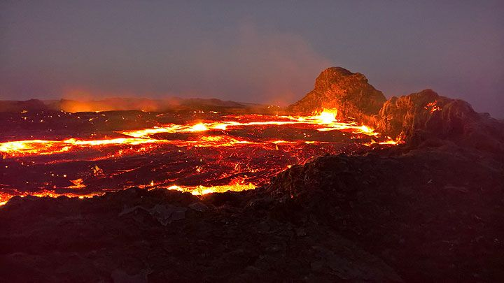
There was a major eruption on 25 September 2005 which killed 250 head of livestock and forced
thousands of nearby residents to flee. There was further lava flow in August 2007, forcing
the evacuation of hundreds and leaving two missing. An eruption on 4 November 2008 was
reported by scientists at Addis Ababa University.Another eruption was reported in January
2017.
Erta Ale (or Ertale or Irta'ale) is a continuously active basaltic shield volcano in the Afar
Region of northeastern Ethiopia. It is situated in the Afar Depression, a badland desert area.
Erta Ale is the most active volcano in Ethiopia.